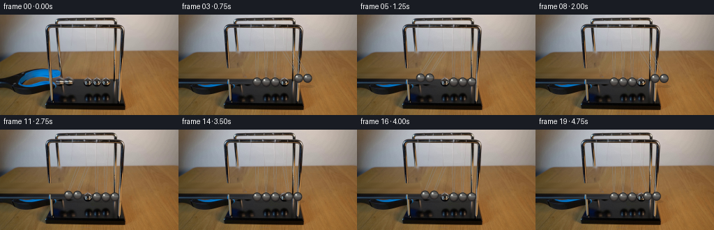
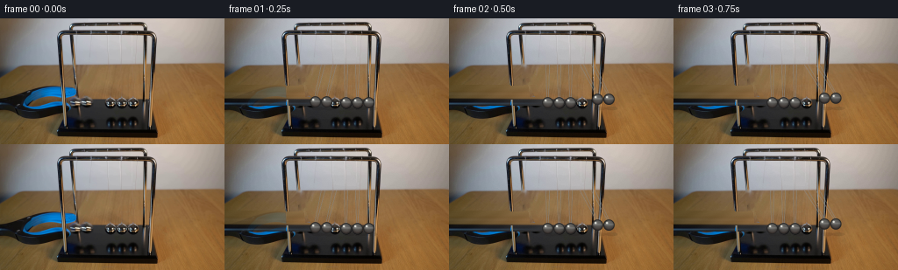
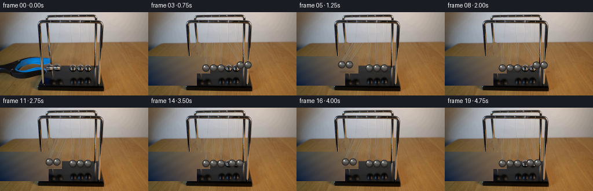
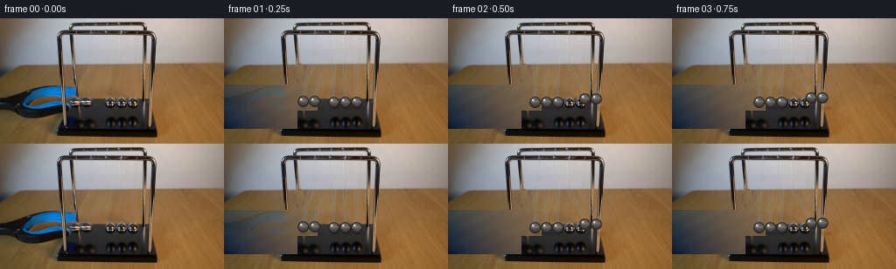

CODING AGENTS AS PIXEL WORLD MODELS
traex/GPT-5.6-Sol · 0053
点击播放 · 原生 RGB 像素
逐轮保存的候选
回放视频、检查图与代码变化。
每份候选均可单独播放。实际图片检查记录在下方工具轨迹中。
候选 01播放与检查图
点击播放 · 原生 RGB 像素


展开代码变化
--- 上一保存版本 +++ 本次保存版本 @@ -0,0 +1,155 @@ +"""Analytic continuation of the supplied Newton's-cradle photograph. + +The camera is locked. A small, high-resolution local repaint is used only in +regions vacated by moving foreground objects; steel balls/strings are then +rendered with soft antialiasing and photographic shading. +""" +from pathlib import Path +import numpy as np +import cv2 +from artifact_io import save + +ROOT = Path(__file__).resolve().parent +W,H,S = 256,144,4 + +def inpaint_background(rgb): + """Recover the static wall/table/frame underneath the released pair/tool.""" + bgr=rgb[:,:,::-1].copy() + # Blue grabber and the two lifted balls occupy this left-hand region. + m=np.zeros((H,W),np.uint8) + # grabber head/jaws; keep the cradle post at x70 and strings to the right + cv2.rectangle(m,(0,76),(69,126),255,-1) + cv2.rectangle(m,(70,77),(86,92),255,-1) + # suspended pair and their strings near x91..105 + cv2.rectangle(m,(73,90),(106,105),255,-1) + cv2.line(m,(84,53),(90,94),255,3) + cv2.line(m,(86,53),(102,94),255,3) + # avoid repainting the bottom base itself + m[100:,:]=0 + # Navier-Stokes interpolation works well on the smoothly varying wood. + bg=cv2.inpaint(bgr,m,5,cv2.INPAINT_NS) + # restore broad wood grain by horizontal interpolation from either side + # (inpaint can leave a gray cast over large masks). + for y in range(76,100): + x0,x1=0,107 + left=bgr[y,0].astype(float) + right=bgr[y,108].astype(float) + # use the row's warm surroundings with a mild grain wave + for x in range(x0,x1): + q=x/108 + col=(1-q)*left+q*right + col += 2.2*np.sin(.18*x+.41*y) + if m[y,x]: bg[y,x]=np.clip(col,0,255) + return bg[:,:,::-1],m + +def alpha_over(dst, src, alpha): + a=alpha[...,None].astype(np.float32)/255 + return np.clip(src*a+dst*(1-a),0,255).astype(np.uint8) + +def render_frame(base,bg,idx): + if idx==0: return base.copy() + # First sample is the held setup. Release occurs immediately after it. + # A short first-frame dissolve keeps motion visually continuous despite 4 fps. + fr=bg.copy() + if idx==1: + # retain a faint remnant only where tool had been, giving plausible fast withdrawal blur + a=np.zeros((H,W),np.uint8) + cv2.rectangle(a,(0,77),(70,99),40,-1) + fr=alpha_over(fr,base,a) + + ss=np.repeat(np.repeat(fr,S,0),S,1) + # Core geometry measured from first_frame: pivots around y53, equilibrium y97. + piv_y=53*S; L=43.5*S; rad=6.1*S + # Five adjacent balls at rest. The left pair was lifted to x~87/99. + rest=np.array([112.5,125.5,138.5,151.5,164.5]) + t=idx/4.0 + # Newton's cradle ideal collision state: two-ball pulse alternates sides. + # Release starts near left turning point. Period ~1.25 s, modest damping. + phase=2*np.pi*t/1.30 + amp=0.60*np.exp(-0.105*t) # radians + q=np.cos(phase) + swing_left=max(q,0.0)*amp + swing_right=min(q,0.0)*amp + # At each half-cycle, two balls on one side move together, the central one rests. + angles=np.zeros(5,float) + if swing_left>0: + angles[0]=angles[1]=-swing_left + elif swing_right<0: + angles[3]=angles[4]=-swing_right + # slight collision compression/visual impulse around crossings + cross=np.exp(-((abs(q))/0.16)**2) + centers=[] + for k,a in enumerate(angles): + px=rest[k]*S + cx=px+L*np.sin(a) + cy=piv_y+L*np.cos(a) + centers.append((cx,cy)) + + # Shadows on wood/table beneath the balls, subtle and semitransparent. + ov=np.zeros_like(ss); al=np.zeros(ss.shape[:2],np.uint8) + for cx,cy in centers: + sx=int(cx+3*S); sy=int(103*S) + cv2.ellipse(al,(sx,sy),(int(7*S),int(2.0*S)),0,0,360,28,-1,cv2.LINE_AA) + cv2.ellipse(ov,(sx,sy),(int(7*S),int(2*S)),0,0,360,(20,14,10),-1,cv2.LINE_AA) + ss=alpha_over(ss,ov,al) + + # Strings, two fine wires per ball. Draw behind spheres. + wire=np.zeros_like(ss); wa=np.zeros(ss.shape[:2],np.uint8) + for k,(cx,cy) in enumerate(centers): + px=rest[k]*S + # paired suspension threads converge on the upper edges of each sphere + for off in (-2.2,2.2): + p0=(int(px+off*S),piv_y) + p1=(int(cx+off*.45*S),int(cy-rad*.70)) + cv2.line(wa,p0,p1,165,max(1,S//2),cv2.LINE_AA) + cv2.line(wire,p0,p1,(209,205,196),max(1,S//2),cv2.LINE_AA) + # dark hairline improves contrast as in the source photo + cv2.line(wire,p0,p1,(92,87,79),1,cv2.LINE_AA) + ss=alpha_over(ss,wire,wa) + + # Realistic polished steel spheres: radial environment bands, rim and highlights. + yy,xx=np.mgrid[0:H*S,0:W*S] + for k,(cx,cy) in enumerate(centers): + dx=(xx-cx)/rad; dy=(yy-cy)/rad; rr=dx*dx+dy*dy + mask=rr<=1 + z=np.sqrt(np.clip(1-rr,0,1)) + # dark lower hemisphere with a cool top reflection and narrow white window glint + val=49 + 42*z + 20*np.clip(-dy,0,1) + 72*np.exp(-((dx+.38)**2+(dy+.42)**2)/.055) + val += 24*np.exp(-((dy+.12)/.17)**2) # horizontal room reflection + val -= 26*np.clip(dy+.18,0,1) + # warm reflection from the tabletop near lower-right + R=val+8*np.clip(dy,0,1)+4; G=val+3; B=val + col=np.stack([R,G,B],-1) + # Fresnel-like dark rim + col*=np.clip(.53+z*.68,.48,1)[...,None] + col=np.clip(col,8,235).astype(np.uint8) + a=np.zeros_like(rr,dtype=np.uint8); a[mask]=255 + # soft 1-pixel edge at supersampling resolution + edge=(rr>0.91)&(rr<=1.08); a[edge]=np.clip((1.08-rr[edge])/.17*255,0,255) + ss=alpha_over(ss,col,a) + # tiny specular pin + cv2.circle(ss,(int(cx-rad*.38),int(cy-rad*.42)),max(1,S), (228,229,220),-1,cv2.LINE_AA) + cv2.circle(ss,(int(cx),int(cy)),int(rad), (38,37,37),max(1,S//2),cv2.LINE_AA) + + # collision sparkle/contact line, restrained and only near equilibrium + if cross>.22: + x=int((132 if np.sin(phase)>0 else 145)*S) + y=int(96*S) + cv2.line(ss,(x,y-3*S),(x,y+3*S),(205,204,195),1,cv2.LINE_AA) + + fr=cv2.resize(ss,(W,H),interpolation=cv2.INTER_AREA) + # Locked-camera source has mild sensor softness/grain; deterministic fine grain. + rng=np.random.default_rng(5300+idx) + noise=rng.normal(0,.38,fr.shape[:2])[...,None] + fr=np.clip(fr.astype(float)+noise,0,255).astype(np.uint8) + return fr + +def main(): + base=cv2.imread(str(ROOT/'first_frame.png'),cv2.IMREAD_COLOR)[:,:,::-1] + assert base.shape==(H,W,3) + bg,_=inpaint_background(base) + frames=np.stack([render_frame(base,bg,i) for i in range(20)]).astype(np.uint8) + frames[0]=base + save(frames,ROOT) + +if __name__=='__main__': main()
候选 02播放与检查图
点击播放 · 原生 RGB 像素

展开代码变化
--- 上一保存版本
+++ 本次保存版本
@@ -18,28 +18,33 @@
# Blue grabber and the two lifted balls occupy this left-hand region.
m=np.zeros((H,W),np.uint8)
# grabber head/jaws; keep the cradle post at x70 and strings to the right
- cv2.rectangle(m,(0,76),(69,126),255,-1)
- cv2.rectangle(m,(70,77),(86,92),255,-1)
+ cv2.rectangle(m,(0,76),(83,126),255,-1)
+ cv2.rectangle(m,(84,77),(106,99),255,-1)
# suspended pair and their strings near x91..105
cv2.rectangle(m,(73,90),(106,105),255,-1)
cv2.line(m,(84,53),(90,94),255,3)
cv2.line(m,(86,53),(102,94),255,3)
- # avoid repainting the bottom base itself
- m[100:,:]=0
# Navier-Stokes interpolation works well on the smoothly varying wood.
bg=cv2.inpaint(bgr,m,5,cv2.INPAINT_NS)
- # restore broad wood grain by horizontal interpolation from either side
- # (inpaint can leave a gray cast over large masks).
- for y in range(76,100):
- x0,x1=0,107
- left=bgr[y,0].astype(float)
- right=bgr[y,108].astype(float)
- # use the row's warm surroundings with a mild grain wave
- for x in range(x0,x1):
- q=x/108
- col=(1-q)*left+q*right
- col += 2.2*np.sin(.18*x+.41*y)
- if m[y,x]: bg[y,x]=np.clip(col,0,255)
+ # Restore the broad wood field. Fit a low-order color surface to visible
+ # tabletop samples, then extrapolate under the foreground tool. This is
+ # preferable to pulling blue pixels inward with a large inpaint radius.
+ Y,X=np.mgrid[0:H,0:W]
+ good=(Y>=54)&(Y<=132)&(m==0)&(X>=105)
+ # Exclude dark cradle hardware and unusually saturated colored details.
+ mx=bgr.max(2); mn=bgr.min(2)
+ good &= (bgr.mean(2)>72) & ~((mx-mn>80)&(bgr[:,:,0]>bgr[:,:,2]*1.25))
+ xf=X[good]/W; yf=Y[good]/H
+ A=np.stack([np.ones_like(xf),xf,yf,xf*yf,xf*xf,yf*yf],1)
+ allx=X/W; ally=Y/H
+ AA=np.stack([np.ones_like(allx),allx,ally,allx*ally,allx*allx,ally*ally],-1)
+ for c in range(3):
+ coef=np.linalg.lstsq(A,bgr[:,:,c][good],rcond=None)[0]
+ surf=AA@coef
+ # subdued grain prevents the recovered area from looking synthetic
+ grain=1.7*np.sin(.19*X+.37*Y+c*.8)+.8*np.sin(.053*X-.21*Y)
+ vals=np.clip(surf+grain,0,255).astype(np.uint8)
+ bg[:,:,c][m>0]=vals[m>0]
return bg[:,:,::-1],m
def alpha_over(dst, src, alpha):
@@ -61,7 +66,7 @@
# Core geometry measured from first_frame: pivots around y53, equilibrium y97.
piv_y=53*S; L=43.5*S; rad=6.1*S
# Five adjacent balls at rest. The left pair was lifted to x~87/99.
- rest=np.array([112.5,125.5,138.5,151.5,164.5])
+ rest=np.array([99.5,112.5,125.5,138.5,151.5])
t=idx/4.0
# Newton's cradle ideal collision state: two-ball pulse alternates sides.
# Release starts near left turning point. Period ~1.25 s, modest damping.
候选 03播放与检查图
点击播放 · 原生 RGB 像素

展开代码变化
--- 上一保存版本
+++ 本次保存版本
@@ -24,13 +24,18 @@
cv2.rectangle(m,(73,90),(106,105),255,-1)
cv2.line(m,(84,53),(90,94),255,3)
cv2.line(m,(86,53),(102,94),255,3)
+ tool=m.copy()
+ # Remove the photographed equilibrium spheres too: when the analytic
+ # spheres swing away, no frozen duplicate should remain underneath.
+ for x in (99,112,125,138,151,164):
+ cv2.circle(m,(x,97),7,255,-1)
# Navier-Stokes interpolation works well on the smoothly varying wood.
bg=cv2.inpaint(bgr,m,5,cv2.INPAINT_NS)
# Restore the broad wood field. Fit a low-order color surface to visible
# tabletop samples, then extrapolate under the foreground tool. This is
# preferable to pulling blue pixels inward with a large inpaint radius.
Y,X=np.mgrid[0:H,0:W]
- good=(Y>=54)&(Y<=132)&(m==0)&(X>=105)
+ good=(Y>=54)&(Y<=132)&(tool==0)&(X>=105)
# Exclude dark cradle hardware and unusually saturated colored details.
mx=bgr.max(2); mn=bgr.min(2)
good &= (bgr.mean(2)>72) & ~((mx-mn>80)&(bgr[:,:,0]>bgr[:,:,2]*1.25))
@@ -44,7 +49,7 @@
# subdued grain prevents the recovered area from looking synthetic
grain=1.7*np.sin(.19*X+.37*Y+c*.8)+.8*np.sin(.053*X-.21*Y)
vals=np.clip(surf+grain,0,255).astype(np.uint8)
- bg[:,:,c][m>0]=vals[m>0]
+ bg[:,:,c][tool>0]=vals[tool>0]
return bg[:,:,::-1],m
def alpha_over(dst, src, alpha):
候选 04播放与检查图
可观测工具轨迹
实际执行的命令与返回图片。
命令 1exit 0
/bin/bash -lc 'cat GENERATION_RULES.md'
命令 2exit 0
/bin/bash -lc "cat prompt.txt && printf '\\n---FILES---\\n' && find . -maxdepth 2 -type f -printf '%p\\n' | sort"
命令 3exit 0
/bin/bash -lc "python3 - <<'PY'
from PIL import Image
im=Image.open('first_frame.png')
print(im.mode, im.size)
import numpy as np
x=np.array(im)
print(x.shape,x.min(),x.max(),x.mean(axis=(0,1)))
PY"命令 4exit 0
/bin/bash -lc "python3 - <<'PY'
import cv2, numpy as np
im=cv2.imread('first_frame.png')
g=cv2.cvtColor(im,cv2.COLOR_BGR2GRAY)
print('gray percentiles',np.percentile(g,[0,1,5,10,20,30,50,70,80,90,95,99,100]))
for p in [(0,0),(128,0),(255,0),(0,143),(128,143),(255,143),(128,72),(50,80),(200,80)]:
x,y=p; print(p,im[y,x][::-1])
# Hough circles variants
for dp in [1,1.2]:
for p2 in [12,16,20,24,28]:
cs=cv2.HoughCircles(g,cv2.HOUGH_GRADIENT,dp,8,param1=80,param2=p2,minRadius=5,maxRadius=25)
print(dp,p2, None if cs is None else np.round(cs[0],1).tolist())
# edge bounding by rows/cols
ed=cv2.Canny(g,50,120)
print('edges total',ed.sum()/255)
print('row',sorted(enumerate((ed>0).sum(1)),key=lambda z:z[1],reverse=True)[:20])
print('col',sorted(enumerate((ed>0).sum(0)),key=lambda z:z[1],reverse=True)[:20])
PY"命令 5exit 0
/bin/bash -lc "python3 - <<'PY'
import cv2, numpy as np
im=cv2.imread('first_frame.png')[:,:,::-1]
# classify every 4x4 by HSV + brightness chars
small=cv2.resize(im,(64,36),interpolation=cv2.INTER_AREA)
hsv=cv2.cvtColor(small[:,:,::-1],cv2.COLOR_BGR2HSV)
for y in range(36):
s=''
for x in range(64):
r,g,b=small[y,x]; h,sa,v=hsv[y,x]
if v<35: c='@'
elif v<65:c='#'
elif sa<25:
c='.' if v>190 else ':' if v>140 else 'o' if v>95 else 'O'
elif b>r*1.3 and b>g*1.15: c='B' if v>140 else 'b'
elif r>g*1.5 and r>b*1.6: c='R'
elif r>110 and g>70 and b<90: c='W' if v>180 else 'w' # warm wood
elif r>g*1.15 and g>b*1.1:c='t'
elif g>r*1.2: c='G'
else: c='-'
s+=c
print(f'{y*4:3} {s}')
PY"命令 6exit 0
/bin/bash -lc "python3 - <<'PY'
from PIL import Image
im=Image.open('first_frame.png')
# nearest upscale, output ANSI truecolor blocks (2 vertical px each) at 128x72
im=im.resize((128,72))
p=im.load()
for y in range(0,72,2):
line=''
for x in range(128):
a=p[x,y]; b=p[x,min(y+1,71)]
line+=f'\\x1b[38;2;{a[0]};{a[1]};{a[2]}m\\x1b[48;2;{b[0]};{b[1]};{b[2]}mâ'
line+='\\x1b[0m'
print(line)
PY"命令 7exit 0
/bin/bash -lc "python3 - <<'PY'
import cv2,numpy as np
im=cv2.imread('first_frame.png')[:,:,::-1]
g=cv2.cvtColor(im[:,:,::-1],cv2.COLOR_BGR2GRAY)
ed=cv2.Canny(g,40,100)
# x40:200 downsample 2x2, print edge density plus darkness relative neighborhood perhaps
chars=' .:-=+*#%@'
for yy in range(0,140,2):
s=''
for xx in range(30,210,2):
e=ed[yy:yy+2,xx:xx+2].mean()/255
val=g[yy:yy+2,xx:xx+2].mean()
# edges dedicated, dark pixels prominent
if e>.6:c='@'
elif e>.35:c='#'
elif e>.1:c='+'
elif val<20:c='X'
elif val<40:c='O'
elif val<65:c='o'
elif val<90:c='-'
elif val<120:c='.'
else:c=' '
s+=c
print(f'{yy:03} {s}')
PY"命令 8exit 0
/bin/bash -lc "python3 - <<'PY'
import cv2, numpy as np
from sklearn.cluster import KMeans
im=cv2.imread('first_frame.png')[:,:,::-1]
# kmeans color+xy low-res relevant crop
crop=im[70:136,30:190]
x=crop.reshape(-1,3)
km=KMeans(12,random_state=0,n_init=10).fit(x)
lab=km.labels_.reshape(crop.shape[:2])
for i,c in enumerate(km.cluster_centers_):
ys,xs=np.where(lab==i)
print(i, np.round(c).astype(int),len(xs),'bbox', (xs.min()+30,ys.min()+70,xs.max()+30,ys.max()+70))
# chars cluster
cs='0123456789AB'
for y in range(0,66,2):
s=''
for x in range(0,160,2):
a=lab[y:y+2,x:x+2].ravel(); z=np.bincount(a,minlength=12).argmax();s+=cs[z]
print(f'{y+70:3}',s)
PY"命令 9exit 0
/bin/bash -lc "python3 - <<'PY'
import cv2,numpy as np
im=cv2.imread('first_frame.png')[:,:,::-1]; hsv=cv2.cvtColor(im[:,:,::-1],cv2.COLOR_BGR2HSV)
# dump 4px blocks around x70:175 y70:112 symbols color classes manually
for y in range(70,114,2):
s=''
for x in range(65,181,2):
a=im[y:y+2,x:x+2].mean((0,1)); r,g,b=a; ma=max(a); mi=min(a)
if ma<18:c='X'
elif ma<35:c='@'
elif ma<60:c='#'
elif ma<90:c='o'
elif ma-mi<12 and ma>175:c='S'
elif ma-mi<15 and ma>125:c='s'
elif ma-mi<20 and ma>90:c='m'
elif b>r*1.5 and b>g*1.25:c='B'
elif b>r*1.2 and b>g*1.1:c='b'
elif r>g*1.25 and g>b*1.2:c='w'
elif r>g*1.1 and g>b*1.05:c='t'
else:c='.'
s+=c
print(f'{y:03} {s}')
# print every 4x4 mean RGB for x80:175 y84:108
print('grid RGB')
for y in range(84,109,4):
print('y',y,[(x,tuple(np.round(im[y:y+4,x:x+4].mean((0,1))).astype(int))) for x in range(80,176,4)])
PY"命令 10exit 0
/bin/bash -lc "python3 - <<'PY'
import cv2,numpy as np
im=cv2.imread('first_frame.png')[:,:,::-1]; g=cv2.cvtColor(im[:,:,::-1],cv2.COLOR_BGR2GRAY)
# map grayscale/color at each pixel, 1x resolution, x65:175 y75:127
for y in range(74,128):
s=''
for x in range(60,181):
r,gg,b=im[y,x]; v=g[y,x]
if b>r*1.5 and b>gg*1.25 and b>100:c='B'
elif b>r*1.2 and b>gg*1.1 and b>80:c='b'
elif v<10:c='X'
elif v<20:c='@'
elif v<35:c='#'
elif v<55:c='O'
elif v<75:c='o'
elif v<95:c='-'
elif v<120:c='.'
elif abs(int(r)-int(gg))<15 and abs(int(gg)-int(b))<15 and v>160:c='S'
elif v<145:c=':'
elif v<175:c=','
else:c=' '
s+=c
print(f'{y:03} {s}')
PY"命令 11exit 1
/bin/bash -lc "python3 - <<'PY'
import cv2, numpy as np
im=cv2.imread('first_frame.png'); g=cv2.cvtColor(im,cv2.COLOR_BGR2GRAY)
chars='@%#*+=-:. '
print(' '+''.join(str(x//10%10) for x in range(65,176)))
print(' '+''.join(str(x%10) for x in range(65,176)))
for y in range(88,106):
s=''
for x in range(65,176):
s+=chars[min(9,g[y,x]*10//256)]
print(f'{y:3}: {s}')
# local min/max/mean 9 circles candidates at x positions
for x in range(85,170,4):
z=g[91:102,x-4:x+5]
print(x, round(z.mean(),1),z.min(),z.max())
PY"命令 12exit 0
/bin/bash -lc "python3 - <<'PY'
import cv2, numpy as np
im=cv2.imread('first_frame.png'); g=cv2.cvtColor(im,cv2.COLOR_BGR2GRAY)
chars='@%#*+=-:. '
print(' '+''.join(str(x//10%10) for x in range(65,176)))
print(' '+''.join(str(x%10) for x in range(65,176)))
for y in range(88,106):
s=''
for x in range(65,176): s+=chars[min(9,int(g[y,x])*10//256)]
print(f'{y:3}: {s}')
for x in range(85,170,4):
z=g[91:102,x-4:x+5]
print(x, round(z.mean(),1),z.min(),z.max())
PY"命令 13exit 0
/bin/bash -lc "python3 - <<'PY'
import cv2,numpy as np
im=cv2.imread('first_frame.png'); g=cv2.cvtColor(im,cv2.COLOR_BGR2GRAY)
e=cv2.Canny(g,30,80)
mask=np.zeros_like(e);mask[15:100,70:165]=e[15:100,70:165]
ls=cv2.HoughLinesP(mask,1,np.pi/180,12,minLineLength=12,maxLineGap=4)
for l in sorted(ls[:,0].tolist(), key=lambda a:(a[0],a[1])): print(l)
PY"命令 14exit 0
/bin/bash -lc "python3 - <<'PY'
import cv2,numpy as np
im=cv2.imread('first_frame.png');g=cv2.cvtColor(im,cv2.COLOR_BGR2GRAY)
for blur in [g,cv2.GaussianBlur(g,(3,3),0),cv2.medianBlur(g,3)]:
for p2 in [5,7,9,11,13,15]:
c=cv2.HoughCircles(blur[80:110,60:175],cv2.HOUGH_GRADIENT,1,6,param1=60,param2=p2,minRadius=4,maxRadius=10)
if c is not None: print(p2,[(round(x,1)+60,round(y,1)+80,round(r,1)) for x,y,r in c[0]])
print()
PY"命令 15exit 0
/bin/bash -lc "sed -n '1,240p' artifact_io.py"
命令 16exit 0
/bin/bash -lc "cat > generate.py <<'PY'
\"\"\"Analytic continuation of the supplied Newton's-cradle photograph.
The camera is locked. A small, high-resolution local repaint is used only in
regions vacated by moving foreground objects; steel balls/strings are then
rendered with soft antialiasing and photographic shading.
\"\"\"
from pathlib import Path
import numpy as np
import cv2
from artifact_io import save
ROOT = Path(__file__).resolve().parent
W,H,S = 256,144,4
def inpaint_background(rgb):
\"\"\"Recover the static wall/table/frame underneath the released pair/tool.\"\"\"
bgr=rgb[:,:,::-1].copy()
# Blue grabber and the two lifted balls occupy this left-hand region.
m=np.zeros((H,W),np.uint8)
# grabber head/jaws; keep the cradle post at x70 and strings to the right
cv2.rectangle(m,(0,76),(69,126),255,-1)
cv2.rectangle(m,(70,77),(86,92),255,-1)
# suspended pair and their strings near x91..105
cv2.rectangle(m,(73,90),(106,105),255,-1)
cv2.line(m,(84,53),(90,94),255,3)
cv2.line(m,(86,53),(102,94),255,3)
# avoid repainting the bottom base itself
m[100:,:]=0
# Navier-Stokes interpolation works well on the smoothly varying wood.
bg=cv2.inpaint(bgr,m,5,cv2.INPAINT_NS)
# restore broad wood grain by horizontal interpolation from either side
# (inpaint can leave a gray cast over large masks).
for y in range(76,100):
x0,x1=0,107
left=bgr[y,0].astype(float)
right=bgr[y,108].astype(float)
# use the row's warm surroundings with a mild grain wave
for x in range(x0,x1):
q=x/108
col=(1-q)*left+q*right
col += 2.2*np.sin(.18*x+.41*y)
if m[y,x]: bg[y,x]=np.clip(col,0,255)
return bg[:,:,::-1],m
def alpha_over(dst, src, alpha):
a=alpha[...,None].astype(np.float32)/255
return np.clip(src*a+dst*(1-a),0,255).astype(np.uint8)
def render_frame(base,bg,idx):
if idx==0: return base.copy()
# First sample is the held setup. Release occurs immediately after it.
# A short first-frame dissolve keeps motion visually continuous despite 4 fps.
fr=bg.copy()
if idx==1:
# retain a faint remnant only where tool had been, giving plausible fast withdrawal blur
a=np.zeros((H,W),np.uint8)
cv2.rectangle(a,(0,77),(70,99),40,-1)
fr=alpha_over(fr,base,a)
ss=np.repeat(np.repeat(fr,S,0),S,1)
# Core geometry measured from first_frame: pivots around y53, equilibrium y97.
piv_y=53*S; L=43.5*S; rad=6.1*S
# Five adjacent balls at rest. The left pair was lifted to x~87/99.
rest=np.array([112.5,125.5,138.5,151.5,164.5])
t=idx/4.0
# Newton's cradle ideal collision state: two-ball pulse alternates sides.
# Release starts near left turning point. Period ~1.25 s, modest damping.
phase=2*np.pi*t/1.30
amp=0.60*np.exp(-0.105*t) # radians
q=np.cos(phase)
swing_left=max(q,0.0)*amp
swing_right=min(q,0.0)*amp
# At each half-cycle, two balls on one side move together, the central one rests.
angles=np.zeros(5,float)
if swing_left>0:
angles[0]=angles[1]=-swing_left
elif swing_right<0:
angles[3]=angles[4]=-swing_right
# slight collision compression/visual impulse around crossings
cross=np.exp(-((abs(q))/0.16)**2)
centers=[]
for k,a in enumerate(angles):
px=rest[k]*S
cx=px+L*np.sin(a)
cy=piv_y+L*np.cos(a)
centers.append((cx,cy))
# Shadows on wood/table beneath the balls, subtle and semitransparent.
ov=np.zeros_like(ss); al=np.zeros(ss.shape[:2],np.uint8)
for cx,cy in centers:
sx=int(cx+3*S); sy=int(103*S)
cv2.ellipse(al,(sx,sy),(int(7*S),int(2.0*S)),0,0,360,28,-1,cv2.LINE_AA)
cv2.ellipse(ov,(sx,sy),(int(7*S),int(2*S)),0,0,360,(20,14,10),-1,cv2.LINE_AA)
ss=alpha_over(ss,ov,al)
# Strings, two fine wires per ball. Draw behind spheres.
wire=np.zeros_like(ss); wa=np.zeros(ss.shape[:2],np.uint8)
for k,(cx,cy) in enumerate(centers):
px=rest[k]*S
# paired suspension threads converge on the upper edges of each sphere
for off in (-2.2,2.2):
p0=(int(px+off*S),piv_y)
p1=(int(cx+off*.45*S),int(cy-rad*.70))
cv2.line(wa,p0,p1,165,max(1,S//2),cv2.LINE_AA)
cv2.line(wire,p0,p1,(209,205,196),max(1,S//2),cv2.LINE_AA)
# dark hairline improves contrast as in the source photo
cv2.line(wire,p0,p1,(92,87,79),1,cv2.LINE_AA)
ss=alpha_over(ss,wire,wa)
# Realistic polished steel spheres: radial environment bands, rim and highlights.
yy,xx=np.mgrid[0:H*S,0:W*S]
for k,(cx,cy) in enumerate(centers):
dx=(xx-cx)/rad; dy=(yy-cy)/rad; rr=dx*dx+dy*dy
mask=rr<=1
z=np.sqrt(np.clip(1-rr,0,1))
# dark lower hemisphere with a cool top reflection and narrow white window glint
val=49 + 42*z + 20*np.clip(-dy,0,1) + 72*np.exp(-((dx+.38)**2+(dy+.42)**2)/.055)
val += 24*np.exp(-((dy+.12)/.17)**2) # horizontal room reflection
val -= 26*np.clip(dy+.18,0,1)
# warm reflection from the tabletop near lower-right
R=val+8*np.clip(dy,0,1)+4; G=val+3; B=val
col=np.stack([R,G,B],-1)
# Fresnel-like dark rim
col*=np.clip(.53+z*.68,.48,1)[...,None]
col=np.clip(col,8,235).astype(np.uint8)
a=np.zeros_like(rr,dtype=np.uint8); a[mask]=255
# soft 1-pixel edge at supersampling resolution
edge=(rr>0.91)&(rr<=1.08); a[edge]=np.clip((1.08-rr[edge])/.17*255,0,255)
ss=alpha_over(ss,col,a)
# tiny specular pin
cv2.circle(ss,(int(cx-rad*.38),int(cy-rad*.42)),max(1,S), (228,229,220),-1,cv2.LINE_AA)
cv2.circle(ss,(int(cx),int(cy)),int(rad), (38,37,37),max(1,S//2),cv2.LINE_AA)
# collision sparkle/contact line, restrained and only near equilibrium
if cross>.22:
x=int((132 if np.sin(phase)>0 else 145)*S)
y=int(96*S)
cv2.line(ss,(x,y-3*S),(x,y+3*S),(205,204,195),1,cv2.LINE_AA)
fr=cv2.resize(ss,(W,H),interpolation=cv2.INTER_AREA)
# Locked-camera source has mild sensor softness/grain; deterministic fine grain.
rng=np.random.default_rng(5300+idx)
noise=rng.normal(0,.38,fr.shape[:2])[...,None]
fr=np.clip(fr.astype(float)+noise,0,255).astype(np.uint8)
return fr
def main():
base=cv2.imread(str(ROOT/'first_frame.png'),cv2.IMREAD_COLOR)[:,:,::-1]
assert base.shape==(H,W,3)
bg,_=inpaint_background(base)
frames=np.stack([render_frame(base,bg,i) for i in range(20)]).astype(np.uint8)
frames[0]=base
save(frames,ROOT)
if __name__=='__main__': main()
PY
python3 generate.py
python3 - <<'PY'
import numpy as np
from PIL import Image
x=np.stack([np.array(Image.open(f'frames/{i:02}.png')) for i in range(20)])
print(x.shape,x.dtype,'frame0 identical',np.array_equal(x[0],np.array(Image.open('first_frame.png'))))
print('motion MAD', [round(np.abs(x[i].astype(int)-x[i-1]).mean(),2) for i in range(1,20)])
PY"命令 17exit 0
/bin/bash -lc "python3 generate.py && python3 - <<'PY'
from PIL import Image
import numpy as np
im=np.array(Image.open('frames/01.png'))
# print color-char map target area post frame
for y in range(70,130,2):
s=''
for x in range(0,180,2):
r,g,b=im[y:y+2,x:x+2].mean((0,1));v=(r+g+b)/3
if v<20:c='X'
elif v<40:c='@'
elif v<65:c='#'
elif b>r*1.3:c='B'
elif v<90:c='o'
elif v<120:c='.'
elif v<155:c=':'
else:c=' '
s+=c
print(y,s)
PY"命令 18exit 0
/bin/bash -lc "python3 - <<'PY'
import cv2,numpy as np
im=cv2.imread('first_frame.png')[:,:,::-1]; m=np.zeros((144,256),bool);m[80:100,0:107]=1
for name,cond in [
('warm', (im[:,:,0]>im[:,:,1]*1.12)&(im[:,:,1]>im[:,:,2]*1.15)),
('blue',(im[:,:,2]>im[:,:,0]*1.3)&(im[:,:,2]>im[:,:,1]*1.15)),
('dark',im.mean(2)<60)]:
ys,xs=np.where(cond&m);print(name, len(xs), (xs.min(),ys.min(),xs.max(),ys.max()) if len(xs) else None)
# source row colors visible left edge vs right
for y in [76,80,84,88,92,96,99,104,110,120]:
print('y',y,'x0',im[y,0], 'x20',im[y,20], 'x60',im[y,60], 'x100',im[y,100], 'x180',im[y,180])
PY"命令 19exit 0
/bin/bash -lc "python3 generate.py && python3 - <<'PY'
from PIL import Image
import numpy as np
x=np.stack([np.array(Image.open(f'frames/{i:02}.png')) for i in range(20)])
print(x.shape,x.dtype,np.array_equal(x[0],np.array(Image.open('first_frame.png'))))
print('files',__import__('os').path.getsize('pixels.npz'),__import__('os').path.getsize('index.html'))
# positions of darkest circle mass per expected frame diagnostic
for i in range(1,20):
print(i, round(np.abs(x[i].astype(int)-x[i-1].astype(int)).mean(),2), end='; ')
PY"保存候选 4 份；完成命令 19 次；可验证图片返回 0 张。原始 API 响应与完整日志保留在本地。